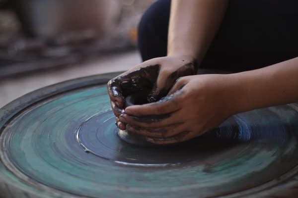
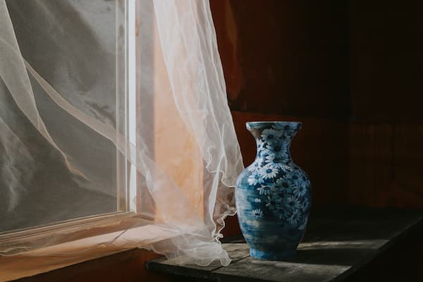
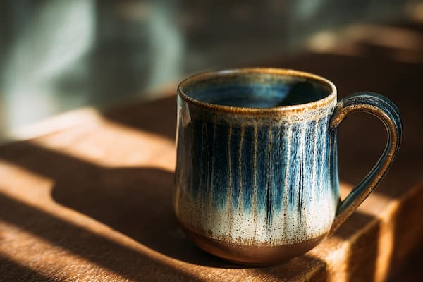
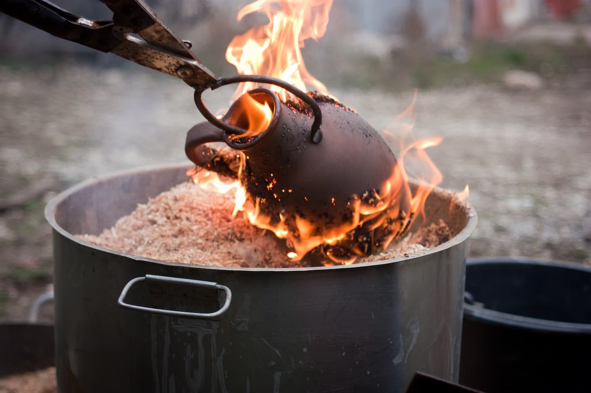
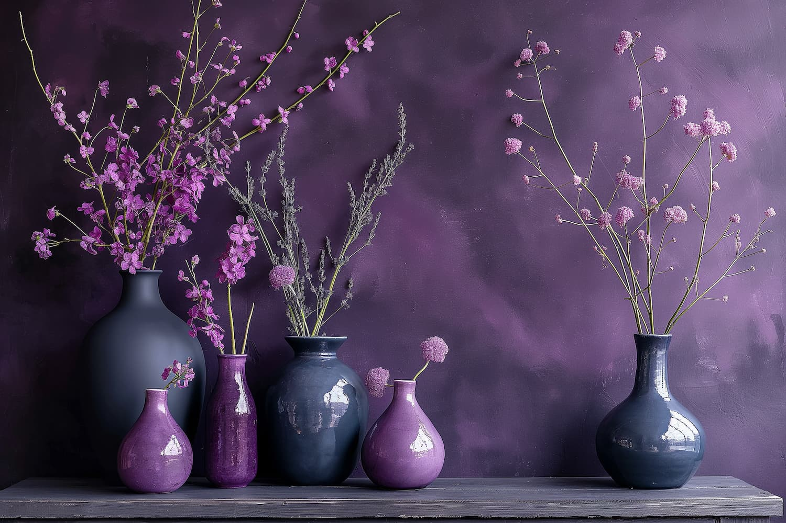
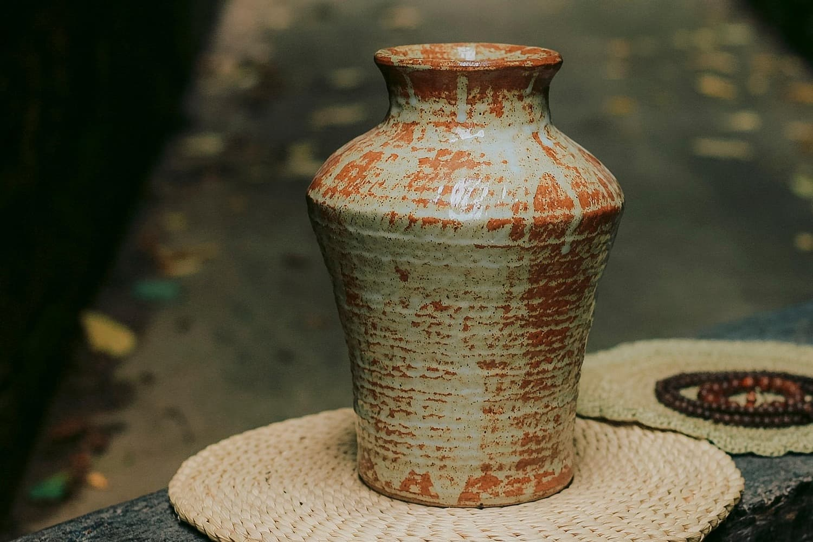

Ceramica
Tradizionale
Arte, terra e passione nelle nostre mani

Selezioniamo le migliori argille e lavoriamo ogni pezzo al tornio con antiche tecniche, garantendo qualità e autenticità in ogni nostra creazione.

Realizziamo smalti e decori ispirati alla tradizione della Sardegna, con motivi geometrici e colori che richiamano la nostra terra e il nostro mare.

Vendita diretta in bottega e su ordinazione. Personalizziamo piatti, vasi e oggetti d'arredo per rendere unico e speciale ogni tuo ambiente.

La ceramica è pazienza,
creatività, dedizione e amore per le proprie radici.

Uniamo le forme classiche della ceramica oristanese,
a un tocco di eleganza contemporanea per le case di oggi.

Dalla modellazione fino alla cottura finale,
curiamo minuziosamente ogni singola fase del processo produttivo.
La nostra bottega nasce con l'obiettivo di mantenere viva la secolare tradizione ceramista di Oristano. Lavoriamo l'argilla con le nostre mani, dando vita a oggetti unici che raccontano storie di artigianato, cultura e dedizione. Realizziamo pezzi su misura per appassionati e per chi desidera un dettaglio speciale nella propria casa.
Uniamo la nostra esperienza pluriennale in questo antico mestiere alla ricerca costante della bellezza. Ogni creazione, dai grandi vasi ornamentali ai piatti di uso quotidiano, è pensata per arricchire la vostra vita, portando nelle vostre case il calore, i colori e l'anima autentica della Sardegna.
Bottega Ceramiche Oristano
Via degli Artigiani, 15
09170 Oristano (OR)
Sardegna - Italia
+39 371 123456
Questo sito utilizza i cookie per migliorare i servizi e l'esperienza dell'utente. Continuando la navigazione, accetti il loro utilizzo. Puoi visualizzare qui la nostra cookie policy.